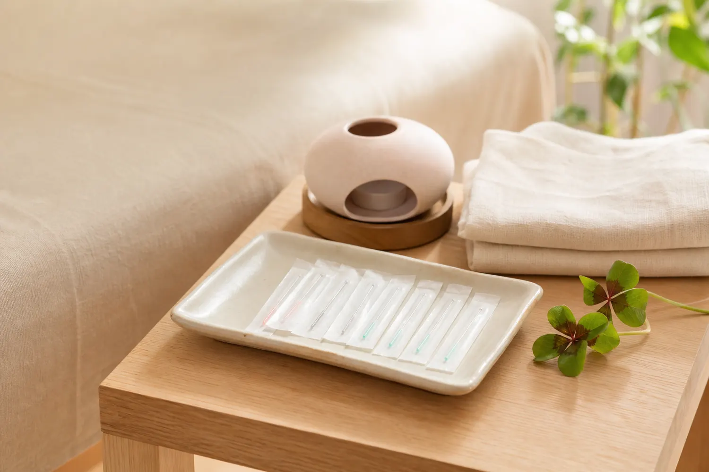

MENU 01
鍼灸
冷えやめぐり、女性のリズムに
細い鍼やお灸を用い、冷え、肩こり、腰痛、生理痛、妊活中の体調管理などに働きかけます。刺激の強さを確認しながら、無理のない施術を進めます。
鍼灸についてPRIVATE SALON IN IZUMISANO
妊活、産前産後、子育て期。
変化の多い毎日に、鍼灸とアロマで向き合います。
鍼灸・アロマ・ベビーマッサージ
01 / WELCOME
鍼灸サロン Cloverは、妊活中や産前産後、子育て期に感じやすい不調に向き合う完全予約制のプライベートサロンです。
鍼灸・アロマ・ベビーマッサージを通じて、一人ひとりの状態や不安に合わせた無理のないケアを大切にしています。
サロンについて03 / NEWS
ホームページ制作に向けた準備を進めています
ベビーマッサージ＆交流会について
サロンからのお知らせ
04 / CONTACT
鍼灸サロン Cloverは完全予約制です。
ご予約やメニューのご相談、ベビーマッサージ＆交流会の開催日について、お気軽にお問い合わせください。
予約方法などの詳細は、内容確定後に掲載します。